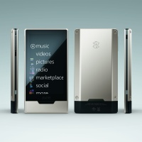

Microsoft announces the expansion of the Zune entertainment service to new platform and markets; confirms new Zune HD portable media player
Premium Zune digital entertainment service to be available internationally on Xbox LIVE
By Microsoft Corporation, Published 26th May 2009
REDMOND, Wash. - May 26, 2009 Microsoft Corp. today announced the evolution of Zune, the company's end-to-end music and entertainment service, to a new platform and new markets. Zune will extend its video service to Xbox LIVE internationally this fall. This marks an important development in the Zune strategy and brings the Zune brand to more than 17 million international Xbox LIVE subscribers. In addition, Microsoft confirmed the next generation of the Zune portable media player, Zune HD. Available in the U.S. this fall, Zune HD is the first portable media player that combines a built-in HD Radio receiver, high-definition (HD) video output capabilities, organic light-emitting diode (OLED) touch screen, Wi-Fi and an Internet browser.
"The Zune music player is an integral part of the overall Zune experience, and we're proud to be growing and extending our offering beyond the device," said Enrique Rodriguez, corporate vice president of the Microsoft TV, Video and Music Business Group. "Delivering on Microsoft's connected entertainment vision, this news marks a turning point for Zune as it brings cross-platform experiences and premium video content to living rooms around the world."
Zune Service Expands to New Platform
Zune will be a premium partner in the Xbox LIVE Video Marketplace, bringing an exciting catalog of TV and film to the platform. Zune will occupy the first slot within the Xbox user interface in the Xbox LIVE Video Marketplace, exposing the Zune brand experience to millions of new consumers for the first time. At the Electronic Entertainment Expo (E3) next week, attendees will see firsthand how Zune integrates into Xbox LIVE to create a game-changing entertainment experience.
Introducing Zune HD
Zune HD is the next iteration of the Zune device family and brings a new level of listening and viewing experiences to the portable media player category.
- Zune HD comes with a built-in HD Radio receiver so users can listen to higher-quality sound than traditional radio on the go. Users also will have access to the additional song and artist data broadcast by HD Radio stations as well as additional channels from their favourite stations multicasting in HD. If you don’t like the song playing on your station's HD channel, switch to its HD2 or HD3 channels for additional programming.
- The bright OLED touch screen interface allows users to flip through music, movies and other content with ease, and the 16:9 widescreen format display (480x272 resolution) offers a premium viewing experience on the go.
- The HD-compatible output lets Zune HD customers playback supported HD video files from the device through a premium high-definition multimedia interface (HDMI) audiovisual docking station (sold separately) direct to an HD TV in 720p.*
- Zune HD will include a full-screen Internet browser optimised for multitouch functionality.
- Zune HD is Wi-Fi enabled, allowing for instant streaming to the device from the more than 5 million-track Zune music store.
More information on Zune and related images is available at http://www.zune.net/press and http://www.zune.net/ZuneHD
About Zune
Zune is Microsoft's music and entertainment brand that provides an integrated digital entertainment experience. The Zune platform includes a line of portable digital media players, elegant software, the Zune Marketplace online store, and the Zune Social online music community, created to help people discover music. Zune is part of Microsoft's Entertainment and Devices Division and supports the company's software-based services vision to help drive innovation in the digital entertainment space. More information can be found online at http://www.zune.net/en-us/press.
* Supported 720p HD video files play on the device, downscaled to fit the screen at 480 x 272 - not HD resolution. Zune HD and AV Dock, and an HDTV (all sold separately) are required to view video at HD resolution.
HD Radio and the HD Radio logo are proprietary trademarks of iBiquity Digital Corp.